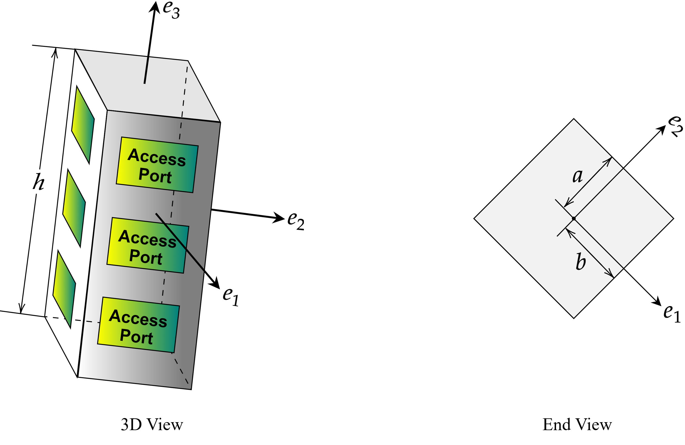
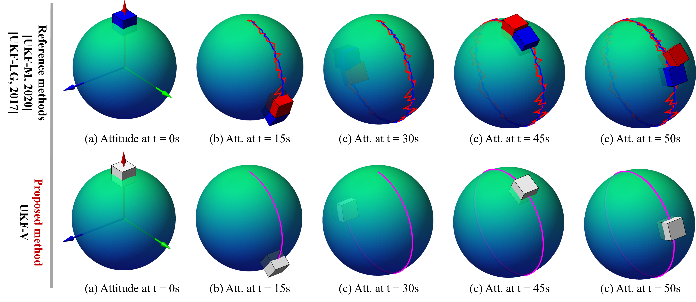
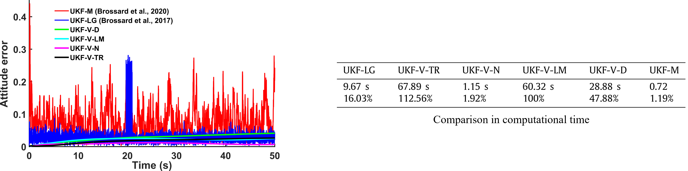
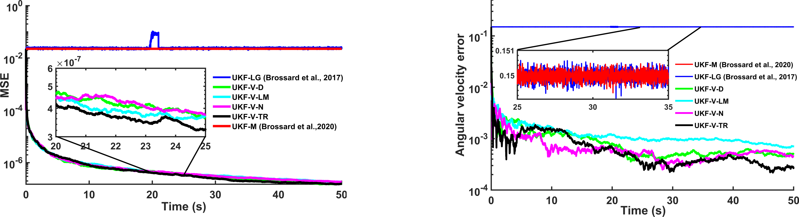

Variationial Unscented Kalman Filter on Matrix Lie Groups (UKF-V)

Abstract
In this paper, several estimation algorithms termed variational unscented Kalman filters (UKF-Vs) are proposed on matrix Lie groups. Inspired by the unscented Kalman filter in Euclidean space, the proposed filters exhibit advantages over conventional methods, as the prediction and measurement update steps are established on the Lie algebra and its dual space, thereby avoiding direct operations on highly nonlinear Lie group configuration spaces.
Correspondingly, the proposed UKF-Vs exhibit significant performance improvements in terms of estimation accuracy and mean-squared error. This formulation also enables the construction of a computationally efficient filtering dynamics. By decoupling the filtering process from the nonlinear Lie group state space, the proposed framework allows prediction and update steps to be implemented entirely on the Lie algebra and its dual space, both of which are endowed with vector space structures. In particular, these formulations can avoid singularities or the well-known gimbal lock in the attitude estimation problem.
Furthermore, the performances of the proposed filters are demonstrated in the satellite attitude estimation problem, which serves as an important benchmark from a control perspective. Numerical results show that the proposed UKF-Vs maintain lower computational complexity and achieve significantly higher accuracy compared with two existing unscented Kalman filters on Lie groups.
Example: Satellite attitude estimation G = SO(3)

Numerical Results: Estimated trajectories

Numerical Results:
Estimated error in attitude & Comparison in computational time

Numerical Results:
Mean square error (MSE) and Estimated error in body velocity

BibTeX
@article{LiWang2025,
title={Variationial Unscented Kalman Filter on Matrix Lie Groups},
author={Li, Tianzhi and Wang, Jinzhi},
journal={Automatica},
volume = {172},
pages = {111995},
year={2025},
url={https://doi.org/10.1016/j.automatica.2024.111995}
}